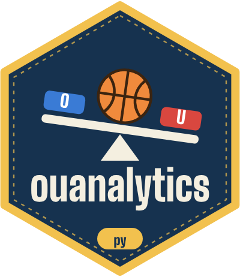

Cross-checking with Python
python-cross-check.Rmd
ouanalytics-py is a second implementation of the same
calculations, written independently in Python with polars. It exists to catch mistakes: if two
programs written separately in two languages agree on every number, a
bug would have to be made twice.
What it checks
-
Every table. It recomputes each table
compute_pool()returns and the playoff seeding, from the same inputs, and compares them with the R result (numbers within 1e-9, everything else exactly). - The data. It checks facts that must hold: no duplicate picks, each team’s wins plus losses equal its games, one grid row per team per day, points that match each pick and status, and seeds that run 1 to the number of teams.
How R hands over a case
R writes a case as CSV files in a fixed layout with
export_pool_case() and
export_seeding_case():
<case>/inputs/*.csv what went in
<case>/outputs/*.csv what R computedRun it
cd nba-over-under-2026-2027/ouanalytics-py
uv sync
uv run pytest # tests, 100% coverage
uv run ouanalytics-check tests/golden/* # the golden cases R wrote
uv run ouanalytics-check ../check-export/pool ../check-export/seeding # today's buildThe golden cases come from R: after any change to the R calculations,
re-run ouanalytics/tools/make-golden.R, then the Python
tests. A difference means one of the two is wrong.